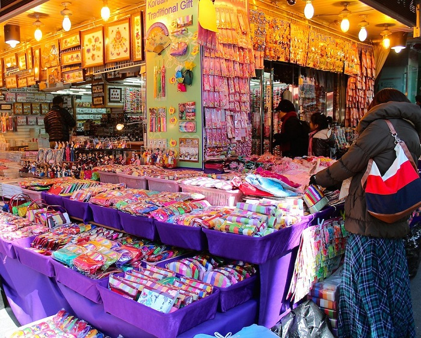
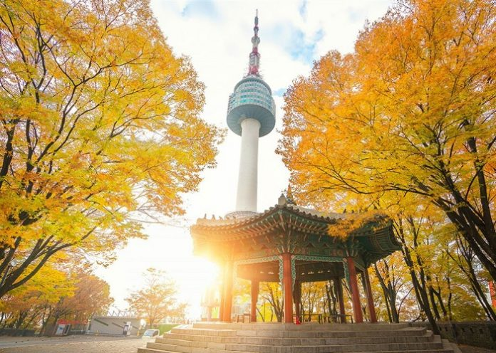
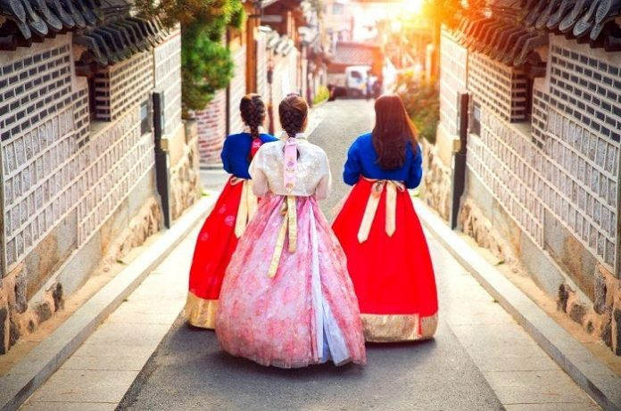
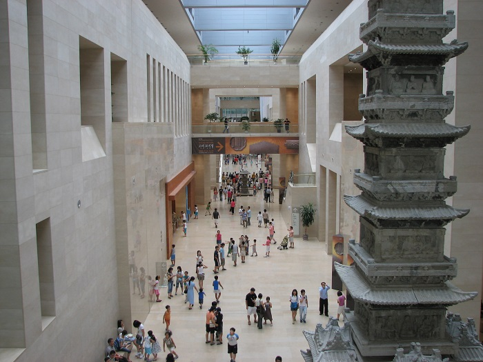
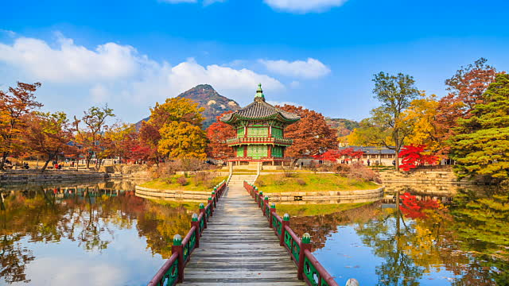

Lotte World
240 Olympic-ro, Jamsil 3 (sam) -dong, Songpa-gu, Seoul, Hàn Quốc.

Lotte World Hàn Quốc là công viên giải trí hàng đầu gồm khu giải trí trong nhà và khu ngoài trời thu hút du khách trong và ngoài nước tìm đến để trải nghiệm những trò chơi để có những khoảnh khắc đáng nhớ tại đây.
Chợ Namdaemun
21 Namdaemunsijang 4-gil, Namchang-dong, Jung-gu, Seoul, Hàn Quốc
Namdaemun là một khu chợ truyền thống lâu đời lớn nhất ở Seoul Hàn Quốc, là thiên đường thời trang và ẩm thực thu nhỏ, một số lễ hội văn hóa đặc trưng cũng là điểm hấp dẫn.
Tháp N Seoul
105 Namsangongwon-gil, Yongsan 2 (i) ga-dong, Yongsan-gu, Seoul, Hàn Quốc
Ở Seoul có tháp Namsan. Người ta thường nói thế này: “Bất đáo Namsan, bất đáo Hàn”, không có tòa nhà nào ở Seoul mang tính biểu tượng và đại diện cho thành phố hơn ngọn tháp này.
Khu làng cổ Bukchon Hanok
Gye-dong, Jongno-gu, Seoul, Hàn Quốc
Nằm giữa 2 cung điện Gyeongbokgung và Cung điện Changdeokgung, ngôi làng cổ nổi tiếng Bukcheon Hanok đẹp như tranh vẽ, là nơi tuyệt vời đối với những du khách muốn tìm hiểu về văn hóa của Hàn Quốc.
Bảo tàng Quốc gia Hàn Quốc
137 Seobinggo-ro, Seobinggo-dong, Yongsan-gu, Seoul, Hàn Quốc
Bảo tàng quốc gia Hàn Quốc là bảo tàng lớn nhất Hàn Quốc, cũng là nơi lưu giữ nhiều cổ vật quý hiếm trong văn hóa từ cổ đại đến hiện đại của đất nước này.
Cung điện Gyeongbokgung
161 Sajik-ro, Sejongno, Jongno-gu, Seoul, Hàn Quốc
Là di tích lịch sử quốc gia thứ 117 của Hàn Quốc, là một biểu trưng của thời đại Joseon Hàn Quốc cùng cảnh quan thiên nhiên và dấu ấn văn hoá tuyệt vời.
Giới thiệu
Top 20 điểm tham quan nhất định phải ghé thăm trong hành trình chinh phục Seoul
Follow Me
Liên hệ
Điện thoại: 0903357616
Email: thaontps24690@fpt.edu.vn